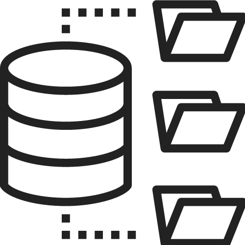

Repositórios
Django Project

Aplicação Django:
- Desenvolvida em ambiente Linux
-
Elementos construidos através de componentes
-
Back-end contruido com
Django Rest Framework (DRF)
Python Library
Biblioteca Python com:
-
Códigos para desenvolvimento de APIs e Micros-serviços utilizando
a biblioteca Flask
-
Códigos no paradigma de
Programação Orientada a Objetos
-
Códigos de scripts SQL e T-SQL
-
Código de um CRUD em Flask,
PostgreSQL e suas dependências
Algorithms Python
Algoritmos Python com:
-
Algoritmos de busca em grafos para busca gulosa,
busca à estrela e
pesquisa binária
-
Algoritmo para ordenação de vetor utilizando a biblioteca
numpy
-
Algoritmo para aplicação de Lógica Fuzzy utilizando biblioteca
skfuzzy
-
Algoritmos de otimização utilizando a biblioteca
mlrose
PHP7 Library
Biblioteca PHP7 com:
-
Códigos sobre o básico da linguagem com sintaxe, variáveis e
operadores
- Códigos para auxiliar na Programação Orientada a Objetos
- Códigos de consulta SQL e T-SQL
-
Códigos de um CRUD utilizando PostgreSQL e suas dependências
JavaScript Library
Biblioteca JavaScript com:
- Estrutura de dados, condicionais e operadores.
- Objetos nativos da linguagem
- Sintaxe basica do AJAX
- Códigos escritos com testes unitários.
Contribuições